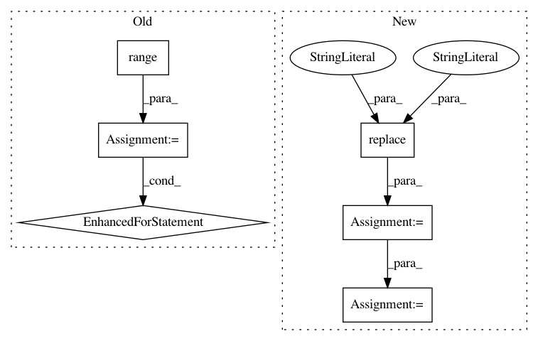

d3ee4125592e31af6d7548ad80728de1e74750dd,ninja.py,,parse_conceptnet4,#Any#,127
Before Change
def parse_conceptnet4(prefix):
lines = []
for style in ["conceptnet4", "conceptnet4_nadya"]:
for i in range(10):
input = prefix+"raw/%s/%s_flat_%s.jsons"%(style, style, i)
output = prefix+"edges/%s%s_flat_%s.msgpack"%(style, style, i)
add_dep(lines, "parse", input, output, params={"filetype":"conceptnet4"})
return lines
def parse_ptt_petgame(prefix):
After Change
def parse_conceptnet4(deps):
for type in ["conceptnet4", "conceptnet4_nadya", "conceptnet_zh"]:
for input in in_tar[type]:
output = input.replace("jsons", "msgpack")\
.replace("txt", "msgpack")\
.replace("raw", "edges")
parser = type if not type.endswith("zh") else "ptt_petgame"
deps["parse %s"%type] = Dep(
[input],
[output],
"parse",
{"parser": parser})
def extract_wiktionary(deps):
for lang in wiktionary_langs:
In pattern: SUPERPATTERN
Frequency: 3
Non-data size: 6
Instances
Project Name: commonsense/conceptnet5
Commit Name: d3ee4125592e31af6d7548ad80728de1e74750dd
Time: 2015-06-22
Author: jchin@luminoso.com
File Name: ninja.py
Class Name:
Method Name: parse_conceptnet4
Project Name: tensorflow/tensorflow
Commit Name: de336139770c6e9e035c0e402375efda48d75301
Time: 2020-11-18
Author: crccw@google.com
File Name: tensorflow/python/distribute/multi_process_lib.py
Class Name:
Method Name: _set_spawn_exe_path
Project Name: commonsense/conceptnet5
Commit Name: d3ee4125592e31af6d7548ad80728de1e74750dd
Time: 2015-06-22
Author: jchin@luminoso.com
File Name: ninja.py
Class Name:
Method Name: parse_conceptnet4
Project Name: tensorflow/tensorflow
Commit Name: 448e080c752a1b5f54c422401b41e824b0274a91
Time: 2020-11-17
Author: crccw@google.com
File Name: tensorflow/python/distribute/multi_process_lib.py
Class Name:
Method Name: _set_spawn_exe_path